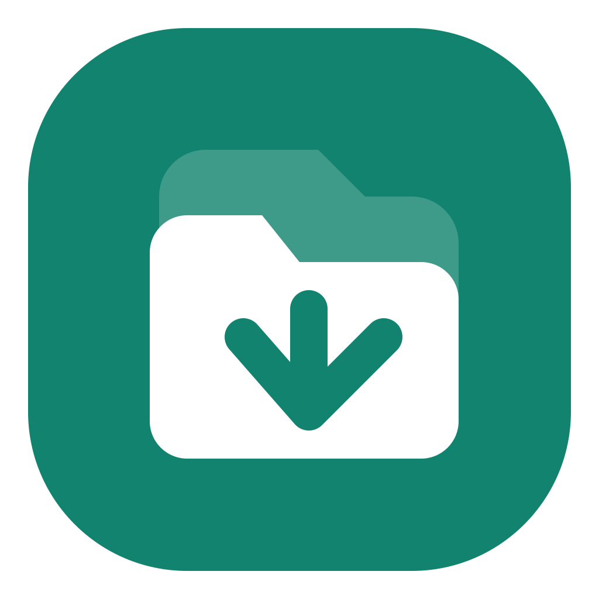
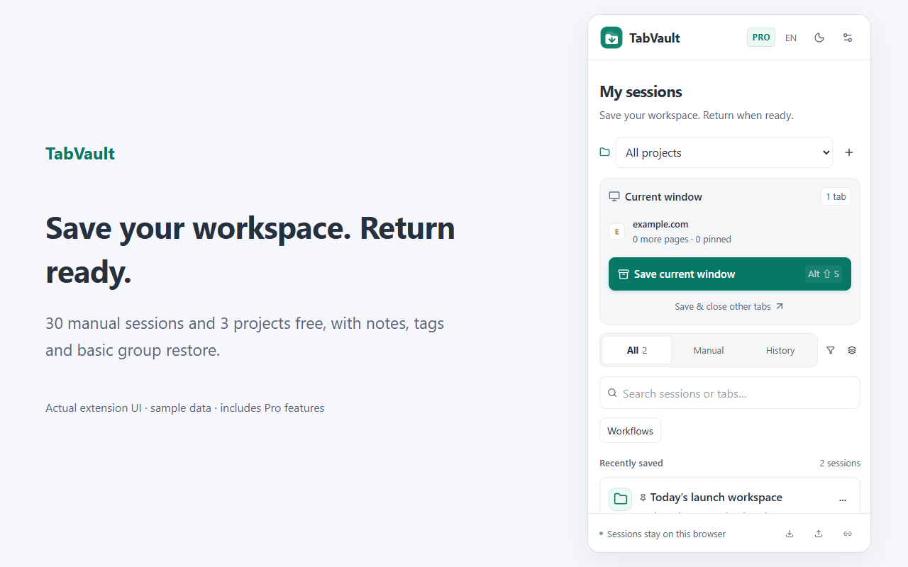
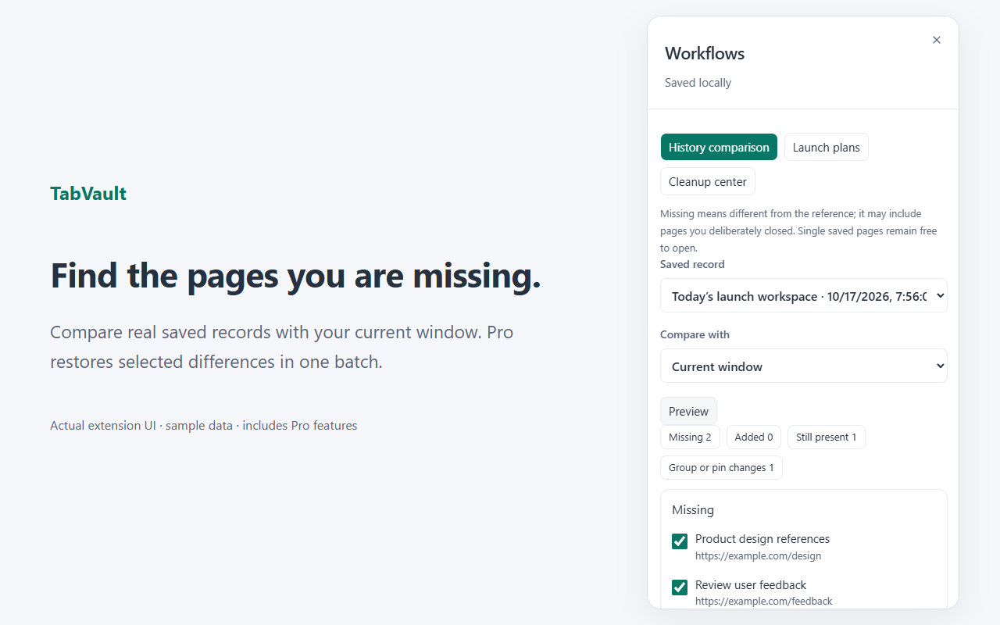
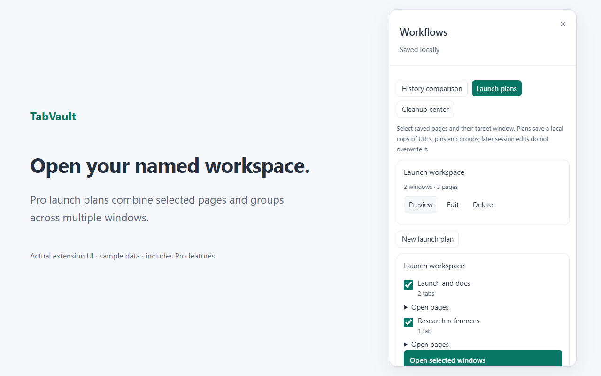
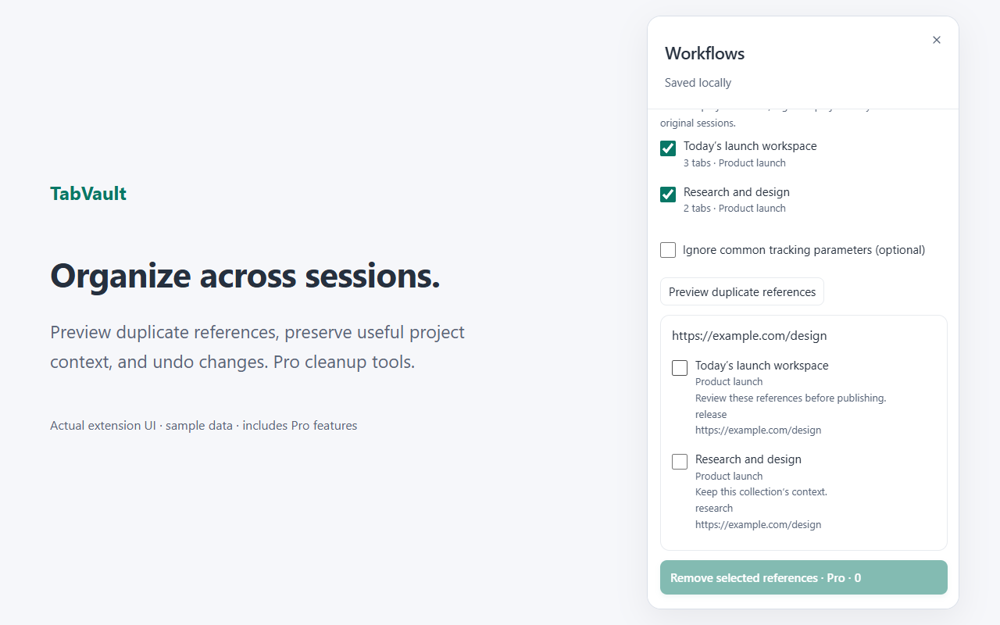
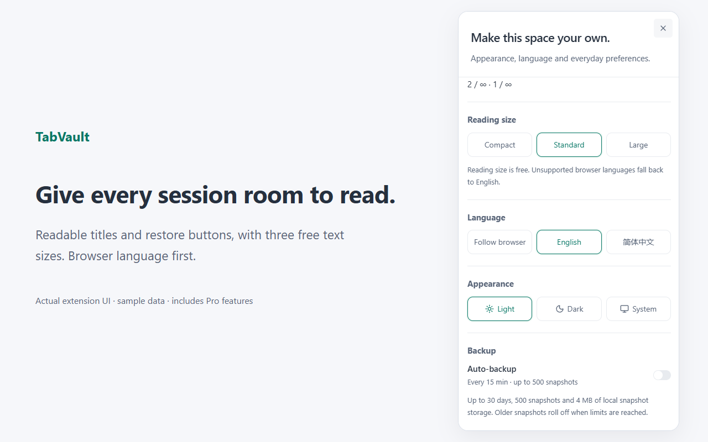

Save your workspace
Save up to 30 manual sessions in 3 projects for free. Keep notes, tags, pins and search alongside your saved pages.

TabVaultThis page presents TabVault 0.5.0. Store review and update distribution may take longer; check your installed version.
Keep the pages and context that matter. Find missing tabs, reuse a named workspace, and return at your own pace.
Chrome 116+ · Local storage · No account required

Save up to 30 manual sessions in 3 projects for free. Keep notes, tags, pins and search alongside your saved pages.
Select pages, restore browser groups and pinned tabs, and skip already-open URLs for free. Compare records for free; Pro batch-recovers selected missing pages.
Save named multi-window launch plans and apply cross-session cleanup with Pro. Review first, preserve source context, and undo the last supported local data change.
Compact, standard or large text is free. Follow your browser language with English fallback, or switch between English and Simplified Chinese.
Follows your browser. English fallback, with a manual language choice.
Light, dark, or follow your system.




$6 · one-time purchase
Automatic snapshots are off by default. Free: up to 24 hours / 50 snapshots; Pro: up to 30 days / 500. Both share a 4 MB total snapshot limit, so actual coverage can be shorter. Snapshot cleanup does not delete manual sessions.
Applicable tax is shown at checkout. Each product is purchased separately. Existing Pro licenses include this update.
Start in the extension for automatic activation after payment verification. Email recovery and existing license codes remain available.
No. Content and reusable workflows stay in this browser. JSON backups are available on Free; export before changing devices or uninstalling. Credentials and Pro licenses are excluded. The extension has no usage analytics; website traffic analytics is separate.
Saved URLs and supported tab metadata, including pinned tabs and browser groups. It does not restore passwords, logins, form inputs or unsaved page state. Launch plans open selected windows in sequence; stopping takes effect after the current window finishes. Automatic history can only restore records that were actually saved.
Each product has an optional $6 one-time Pro purchase, with applicable tax shown at checkout. Purchases started in the extension support verified automatic activation. For another device, use purchase-email recovery or an existing license code.
Sessions, snapshots and preferences stay in your browser. Automatic backup is off by default. It can restore content present in an existing snapshot. No extension usage analytics.
Privacy policy